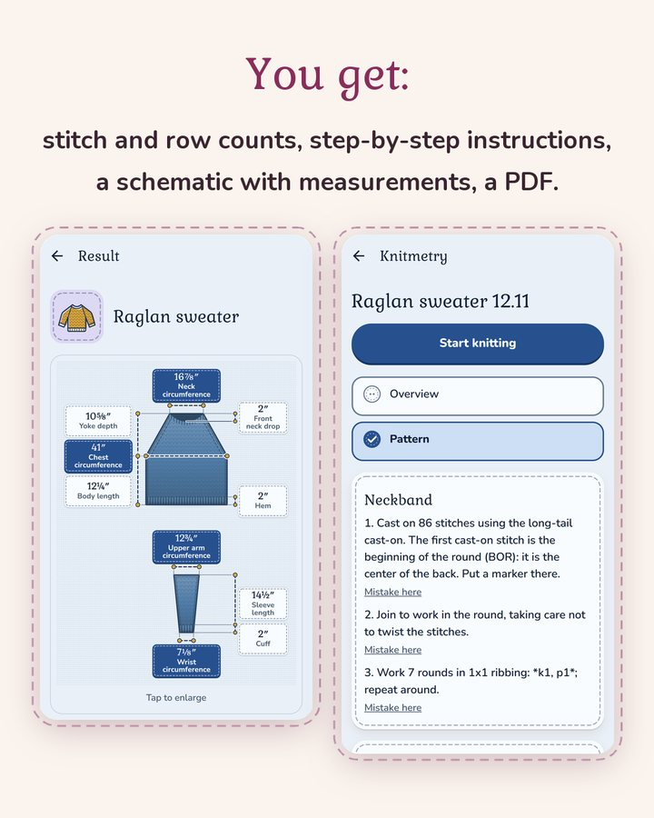
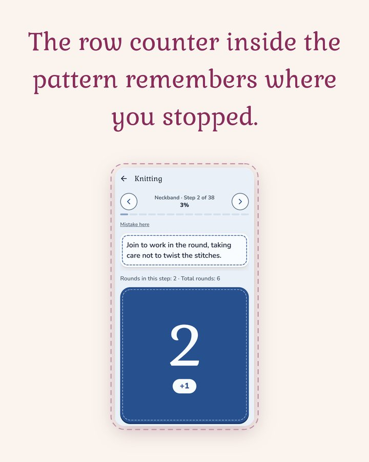
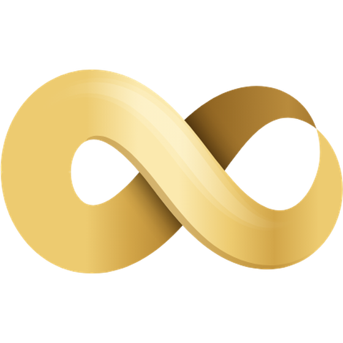

Knitmetry · now on Google Play
Patterns that fit your body.
Enter your measurements and your gauge. Knitmetry works out every stitch and every row, so the garment fits you, not a standard size chart.
Get it on Google Play →One app, your numbers
Knitmetry is a calculator and a pattern writer in one. It is built for knitters who are tired of adjusting patterns by hand.
Your measurements
Chest, waist, arm, head, foot: whatever the garment needs. Not sure? It suggests typical values for your size.
A pattern, row by row
Clear written instructions, a schematic with sizes, a row counter and a printable PDF.
Private by design
Your measurements stay on your phone unless you e-mail them to us yourself. No account. No ads. Without a subscription, the calculators, size charts, lessons and the stand-alone row counter are free.
- Hat
- Socks
- Mittens
- Snood and cowl
- Raglan sweater
- Raglan cardigan
- Round-yoke sweater
- Drop-shoulder sweater
- Vest and top
- Dress
- Blanket
See it in action



About the studio
Mobeos is a small independent studio from Ukraine. The name comes from the Möbius strip: one continuous surface, like a single strand of yarn that becomes a whole garment.
Questions, ideas or feedback: mobeos.studio@gmail.com